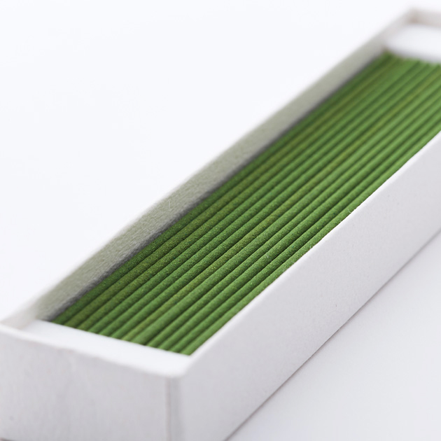
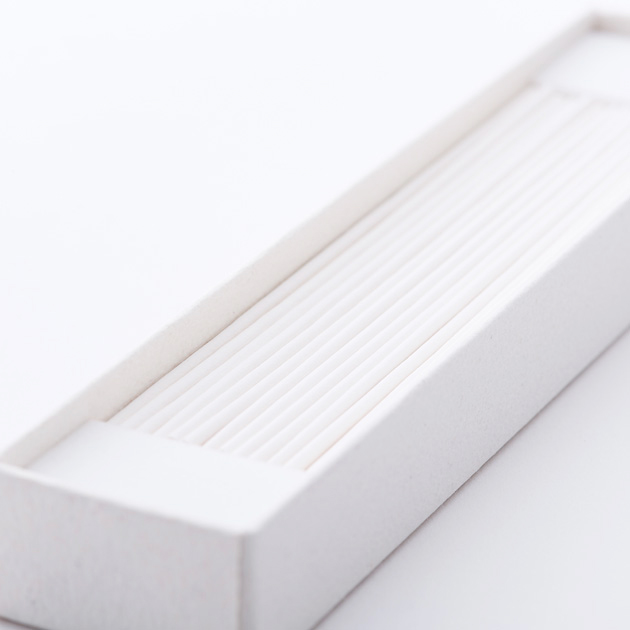
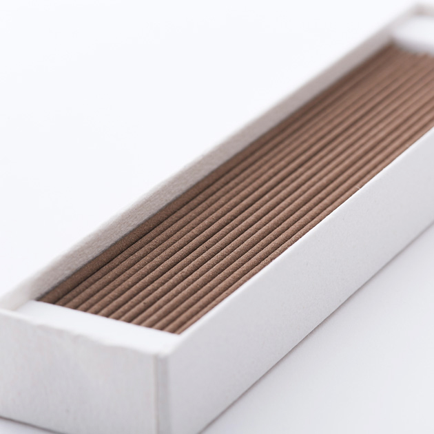
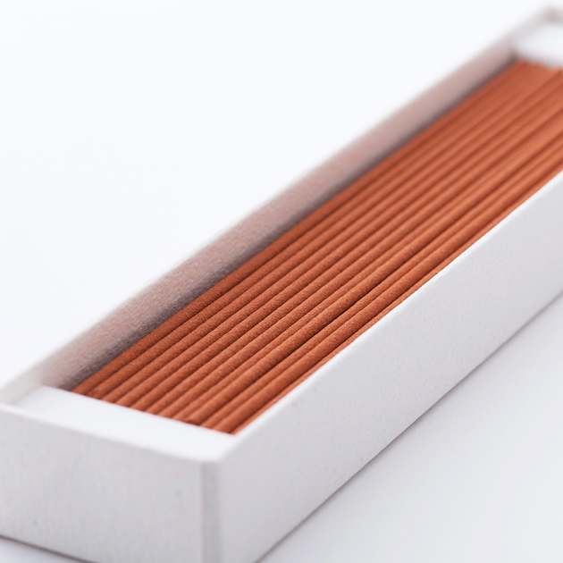
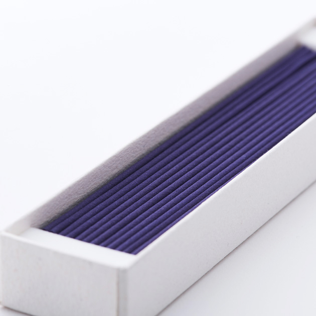
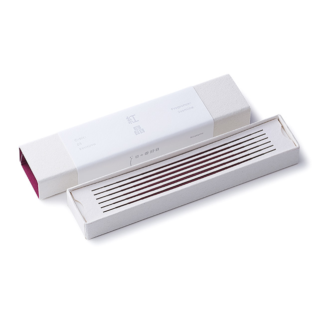
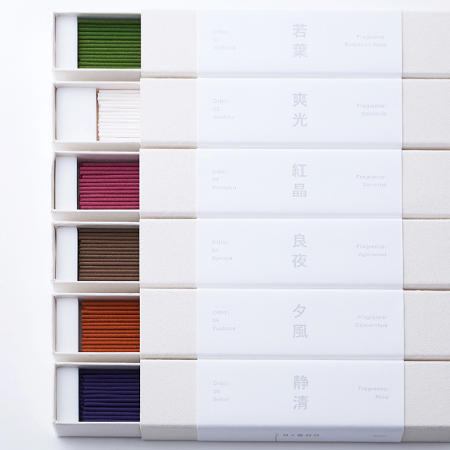
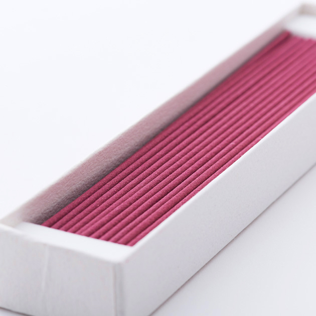
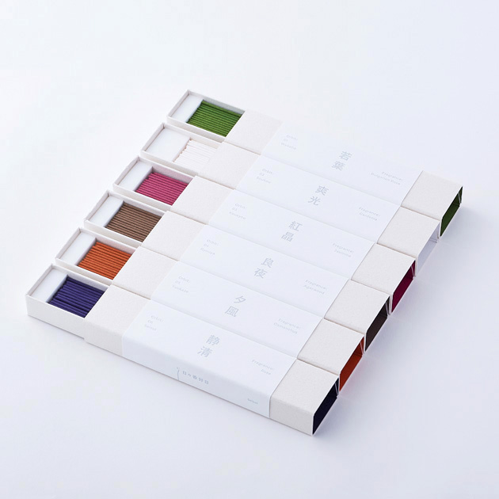

Do
間、個人化への導線
暮らしに間を置く道具を知り、買える場所へ行く。
Home › Do › 祈りの道具屋 まなか › [日々香好日]線香


![[日々香好日]線香（Orbit03 紅晶（こうしょう）ピンク）](../../../../assets/device/0919153943_66ebc72f18c82.jpg)



color: Orbit01 若葉（わかば）グリーン / Orbit02 爽光（そうこう）ホワイト / Orbit03 紅晶（こうしょう）ピンク / Orbit04 良夜（りょうや）ブラウン / Orbit05 夕風（ゆうかぜ）オレンジ / Orbit06 静清（せいせい）ブルーバイオレット
-
Orbit01 若葉（わかば）グリーン
¥3,080 税込
-
Orbit02 爽光（そうこう）ホワイト
¥4,730 税込
-
Orbit03 紅晶（こうしょう）ピンク
¥3,080 税込
-
Orbit04 良夜（りょうや）ブラウン
¥4,730 税込
-
Orbit05 夕風（ゆうかぜ）オレンジ
¥3,080 税込
-
Orbit06 静清（せいせい）ブルーバイオレット
¥3,080 税込
商品説明
祈りを日常化する、美しいお線香
香りを嗅ぐ。その行為が、大切な人を想うきっかけとなるように。古くから、日々の祈りに欠かせないお線香。大切な方のために、自分のために、ふとした時に焚きたくなる香りが、祈りを日常の中に自然と根づかせてくれます。
「日々香好日」という名前は、“香り”を通じて、祈りのある前向きな日常の一助になりたい、という想いから名付けました。

どんな暮らしにも馴染む
ミニマルな佇まい
和でも洋でもない、ミニマルなデザイン。さまざまな暮らし、環境に溶け込みながら、聖域にふさわしい“心地よい違和感”を湛えた佇まいを意識しています。中箱のデザインにもこだわり、日々の祈りの際に焚いていただくだけでなく、蓋をとって置き香としても楽しむことができます。
シリーズには、「暮らしのなかの祈りの軌道（＝Orbit）」を表すナンバリングを施しています。それぞれの香りが、日常でふと立ち止まり、大切な人を想い、祈るためのスイッチになるように、という想いを込めています。

焚き分ける楽しみ
6つの香り、6つの色
動と静。陽と陰。その時の心の在り様や、季節、時間によって焚き分ける楽しみを持てる、それぞれ異なる彩りの6つの香りをご用意しています。
ブルガリア産ローズ配合で瑞々しく爽やかな「若葉」（グリーン）、従来のお線香とは一線を画す澄んだ“白”が特徴のクチナシの香りのお線香「爽光」（ホワイト）、生薬をベースにジャスミンが香る「紅晶」（ピンク）、苦みのある香りのタニ沈香にシャム沈香の甘さでアクセントを添えた「良夜」（ブラウン）、金木犀と銀木犀をミックスした素朴でやさしい甘さが特徴の「夕風」（オレンジ）、白檀と沈香をブレンドした伽羅を思わせる高貴な香り「静清」（ブルーバイオレット）。
それぞれの名前は、香りや色から想起する“祈りの情景”をイメージしたものです。お好きな香りで彩る前向きな祈りの時間をお過ごしください。

天然原料のやさしさ
空間を彩る美しい色
製造を手がけるのは、栃木のお香専門店「蘭と月」。お線香の香りは故人が召し上がるもの、という仏教の「香食（こうじき）」の考えに基づき、天然香料や天然の生薬など、できる限り自然由来の原料を使用して作られています。製造時の天候や材料の微妙な変化の影響を受けやすい、繊細なお線香作り。同じ産地、同じ品質の材料を使い続けることや、その時々のわずかな変化を敏感に感じ取る職人技術によっていつでも同じ香りを楽しむことができます。
独自の配合で作る質の高い香りはもちろん、従来のお線香の概念にとらわれない美しい発色も特徴です。

商品仕様
サイズ
線香：約13.5㎝（若葉、紅晶、良夜、夕風、静清）、約11.9㎝（爽光）、60本
ケース：幅16.4㎝×奥行3.6㎝×高さ2㎝
中蓋：幅15.9㎝×奥行3㎝
素材
線香：天然香木
ケース：紙
中蓋：紙、バルカナイズドファイバー
生産地
線香：栃木県足利市
カラー
Orbit01 若葉（わかば）：グリーン
Orbit02 爽光（そうこう）：ホワイト
Orbit03 紅晶（こうしょう）：ピンク
Orbit04 良夜（りょうや）：ブラウン
Orbit05 夕風（ゆうかぜ）：オレンジ
Orbit06 静清（せいせい）：ブルーバイオレット
デザイナー
まなか開発チーム